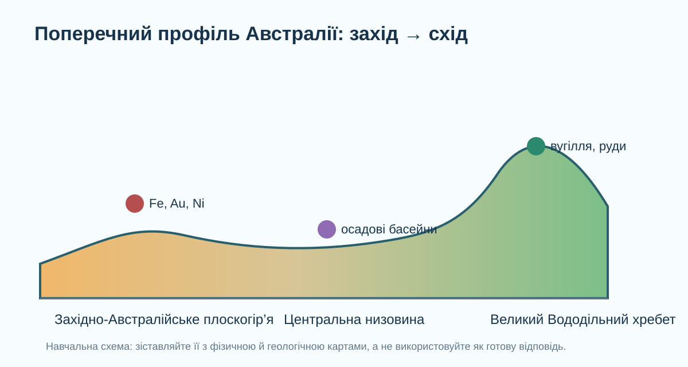

1. Почніть із реальної карти
OpenStreetMap. Використовуйте рельєфні назви й масштабуйте карту.
Знайдіть три великі частини рельєфу
2. Перевірте твердження числами
середня висота Австралії за Geoscience Australia.
площі материка лежить нижче 500 м.
гора Косцюшко — найвища точка материкової Австралії.
3. Профіль захід → схід

Локальна схема. Після неї обов’язково звіртеся з фізичною картою.
Інтерактивний профіль
4. Геологічний «детектив»: де шукати руди?
Геологічні провінції
Geoscience Australia виділяє кратонні, орогенні, осадові та металогенічні провінції. Родовища часто групуються в геологічних провінціях, бо залежать від процесів, які сформували породи.
Australian Geological Provinces ↗
Geoscience Australia: Mineral exploration ↗
Сортування закономірностей
5. Чому Великий Бар’єрний риф — не «гора на суші»?

Розв’яжіть суперечність
У КТП є окреме встановлення взаємозв’язку: чому Великий Бар’єрний риф утворився вздовж північно-східного узбережжя.
6. Коротке відео й перевірка гіпотези
Коротке відео для візуалізації геологічної будови Австралії. Якщо відео недоступне, використайте карти Geoscience Australia.
Поверніться до своєї гіпотези
7. Теорія після дослідження
Чому переважають рівнини?
Австралія має велику частку дуже давньої й відносно стабільної континентальної кори. Значні площі тривалий час зазнавали денудації, тому високі молоді складчасті гірські системи тут не домінують. Східний край виразніший за рельєфом, але займає меншу частину материка.
Чому багато рудних ресурсів?
Давні кратонні та орогенні області пережили численні магматичні, гідротермальні й метаморфічні події. Саме такі процеси концентрують метали. Тому рудні родовища закономірно групуються в певних геологічних провінціях, а не розподілені випадково.
8. CER: сформулюйте доказовий висновок
Claim
Evidence
Reasoning
9. Домашнє завдання
§27. Оберіть один ресурс Австралії — залізна руда, золото, боксити, нікель або вугілля — і створіть міні-досьє: район → геологічна провінція → процес утворення → сучасне значення → один екологічний ризик видобутку.
Електронний підручник: Гільберг, Довгань, Совенко, 7 клас ↗
Geoscience Australia: карти й портали мінеральних ресурсів ↗
10. Тест — 10 балів
Тест відкриється лише після заповнення всіх трьох полів.